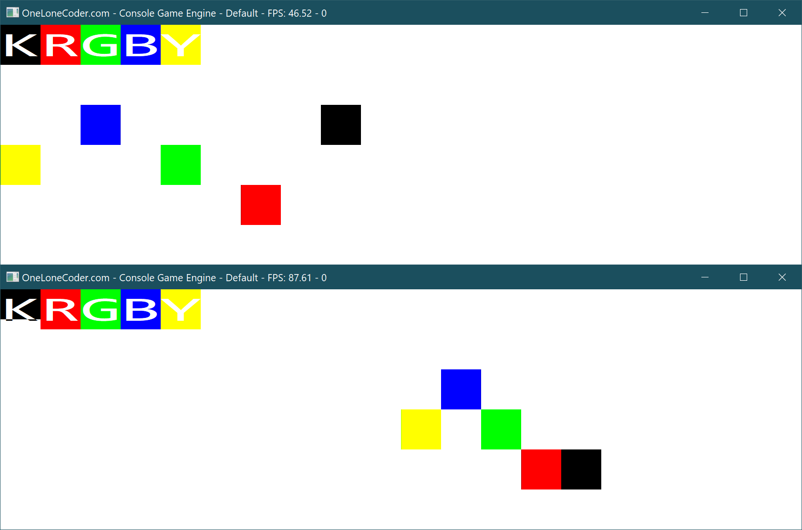
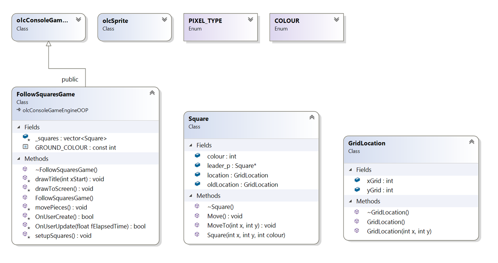
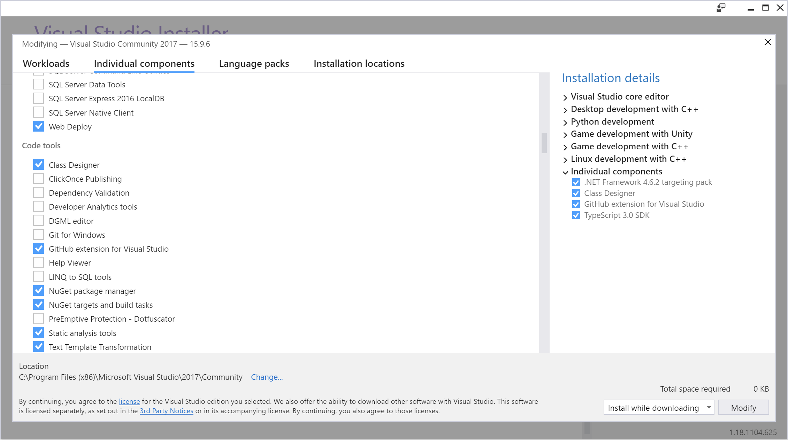

Hit space and the black square moves. Other squares follow. Repeat.
The action:

The classes! Class diagrams are a great way to understand code. Just right click a project and go to view->class diagram.

If you don’t have the option in your right click menu, you may need to add the class designer in Visual Studio Installer -> individual components.

#include <iostream> #include "FollowSquaresGame.h" using namespace std; int main() { FollowSquaresGame game; game.ConstructConsole(20, 6, 48, 48); game.Start(); return 0; }
#pragma once #include "olcConsoleGameEngineOOP.h" #include "Square.h" #include "GridLocation.h" #include <vector> class FollowSquaresGame : public olcConsoleGameEngineOOP { public: const int GROUND_COLOUR = BG_WHITE | FG_WHITE; FollowSquaresGame(); ~FollowSquaresGame(); protected: // Collection of squares. vector<Square> _squares; // My functions to make screen more readable. void setupSquares(); void drawToScreen(); void drawTitle(int xStart = 1); void movePieces(); // Required functions for olcConsoleGameEngineOOP virtual bool OnUserCreate() override; virtual bool OnUserUpdate(float fElapsedTime) override; };
#include "FollowSquaresGame.h" #include "Square.h" #include <thread> #include <chrono> #include <time.h> bool FollowSquaresGame::OnUserCreate() { srand((int)time(NULL)); setupSquares(); return true; } /// Main game loop. bool FollowSquaresGame::OnUserUpdate(float fElapsedTime) { // If space was pressed this frame, move! if (m_keys[VK_SPACE].bPressed) movePieces(); drawToScreen(); // sleep for 10ms, no need to run at a bajillion frames per second. this_thread::sleep_for(chrono::milliseconds(10)); return true; } /// Move each piece to its next location. void FollowSquaresGame::movePieces() { for (unsigned int i = 0; i < _squares.size(); i++) { // Create a simply named reference to _squares[i] // If it's not a reference you'll be editing a copy, not changing the original. Square& square = _squares[i]; if (i == 0) // Move the leading (black) square: increment x by 1, y increments a random from -1 to 1 { int newY = square.location.yGrid + (-1 + (rand() % 3)); if (newY == ScreenHeight()) newY = 0; if (newY < 0) newY = ScreenHeight()-1; int newX = square.location.xGrid + 1; if (newX == ScreenWidth()) newX = 0; square.MoveTo(newX, newY); } else { // Move square i square i-1's oldLocation. 3 follows 2, 2 follows 1 etc. square.MoveTo( _squares[i-1].oldLocation.xGrid, _squares[i - 1].oldLocation.yGrid); } } } /// Draw our snake game to screen in current state void FollowSquaresGame::drawToScreen() { // Clear the screen with ground colour Fill(0, 0, ScreenWidth(), ScreenHeight(), PIXEL_SOLID, GROUND_COLOUR); drawTitle(0); for (unsigned int i = 0; i < _squares.size(); i++) { // a reference (&) to _squares[i] saves us having [i] cluttering up the call to Draw. Less confusing to read. Square& square = _squares[i]; Draw(square.location.xGrid, square.location.yGrid, PIXEL_SOLID, square.colour); } } /// Draw KRGB dramatically at top of screen starting from xStart void FollowSquaresGame::drawTitle(int xStart) { DrawString(xStart, 0, L"K", BG_BLACK | FG_WHITE); DrawString(xStart + 1, 0, L"R", BG_RED | FG_WHITE); DrawString(xStart + 2, 0, L"G", BG_GREEN | FG_WHITE); DrawString(xStart + 3, 0, L"B", BG_BLUE | FG_WHITE); DrawString(xStart + 4, 0, L"Y", BG_YELLOW | FG_WHITE); } /// Sets colours and starting places for each square void FollowSquaresGame::setupSquares() { // Add black, red, green and blue squares to _squares vector. _squares.push_back(Square(8, 2, FG_BLACK)); _squares.push_back(Square(6, 4, FG_RED)); _squares.push_back(Square(4, 3, FG_GREEN)); _squares.push_back(Square(2, 2, FG_BLUE)); _squares.push_back(Square(0, 3, FG_YELLOW)); } // Constructor/Destructor FollowSquaresGame::FollowSquaresGame() { } FollowSquaresGame::~FollowSquaresGame() { }
#pragma once class GridLocation { public: int xGrid = 0; int yGrid = 0; GridLocation(); GridLocation(int x, int y); ~GridLocation(); };
#include "GridLocation.h" GridLocation::GridLocation(int x, int y) { xGrid = x; yGrid = y; //return this; } GridLocation::GridLocation() { } GridLocation::~GridLocation() { }
Moving a snail by whole cells in a frame rate independent way, followed by her friend navi.
Make sure you read and understand this well before typing out the code. It is much easier to understand than reverse engineering the logic from the cpp code.
START MovingAtCellsPerSecond,
NotifyChangingCells,
TrackLastWholeCell
We have:
a 10x10 grid
a snail with:
a speed in cells per second
a float position, a float last position
a last whole cell
forever:
multiply cells per second by fraction of a second elapsed (say 5 * 0.01)
add that distance to position
if round(position) is different from round(lastposition)
print we've changed cells to cell round(position)
store round(lastposition) as last whole cell
clear screen, draw background and draw snail at round(position)
print position, cell and last whole cell to screen.
regardless, store replace last position with position
loop
END MovingAtCellsPerSecond etc
This was started by duplicating our super basic olc SnakeGame project from week 9. It only displayed a string. Saved doing all the unicode setup, grabbing olcConsoleGameEngineOOP h/cpp files etc.
For better performance:
#include <iostream> #include "Game.h" using namespace std; int main() { Game game; game.ConstructConsole(10, 10, 64, 64); game.Start(); return 0; }
#pragma once #include "olcConsoleGameEngineOOP.h" class Game : public olcConsoleGameEngineOOP { public: int _score = 40155; Game(); ~Game(); struct Snail { float x = 0.0; float lastX = 0.0; int cellsPerSec = 15; int lastWholeCell = -1; int sprite = PIXEL_SOLID; int colour = BG_YELLOW | FG_BLACK; }; Snail _snail; Snail _navi; // Inherited via olcConsoleGameEngineOOP virtual bool OnUserCreate() override; virtual bool OnUserUpdate(float fElapsedTime) override; void DrawScreen(); };
#include "Game.h" #include <math.h> #include <chrono> #include <thread> Game::Game() { } Game::~Game() { } bool Game::OnUserCreate() { _navi.colour = BG_YELLOW | FG_BLUE; _navi.sprite = 0x1D5F; return true; } bool Game::OnUserUpdate(float fElapsedTime) { // check for input // update things _snail.x += _snail.cellsPerSec * fElapsedTime; if (round(_snail.x) >= ScreenWidth()) { _snail.x = 0; } if (round(_snail.x) != round(_snail.lastX)) {S _snail.lastWholeCell = (int) round(_snail.lastX); } // draw screen DrawScreen(); _snail.lastX = _snail.x; this_thread::sleep_for(chrono::milliseconds(2)); return true; } void Game::DrawScreen() { Fill(0, 0, ScreenWidth(), ScreenHeight(), PIXEL_SOLID, FG_YELLOW | BG_YELLOW); Draw((int) round(_snail.x), 2, _snail.sprite, _snail.colour); Draw((int)round(_snail.lastWholeCell), 2, _navi.sprite, _navi.colour); DrawString(0, 4, L"x: " + to_wstring(_snail.x), BG_YELLOW | FG_RED); DrawString(0, 5, L"lstX: " + to_wstring(_snail.lastX), BG_YELLOW | FG_RED); DrawString(0, 7, L"Cell: " + to_wstring((int)round(_snail.x)), BG_YELLOW | FG_RED); DrawString(0, 8, L"lstC: " + to_wstring(_snail.lastWholeCell), BG_YELLOW | FG_RED); }